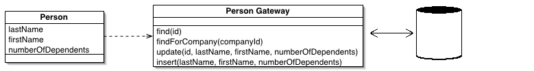

Table Data Gateway (Шлюз к данным таблицы)

Паттерн проектирования Table Data Gateway
Описание Table Data Gateway
Объект выступает в качестве шлюза между данными в приложении и в БД. Один объект работает сразу со всеми записями в таблице.
Сочетание SQL-запросов и логики приложения может вызвать достаточно много проблем. Есть разработчики, которые не сильны в SQL, а есть и те, кто в этом преуспел. Администраторы SQL-серверов должны иметь возможность быстро найти SQL-код, чтобы понимать каким образом настраивать и развивать сервера.
Объект шлюза к таблице содержит все запросы SQL для доступа к отдельной таблице или представлению (view): выборка, обновление, вставка, удаление (CRUD). Остальной код, для взаимодействия с БД, обращается к методам объекта шлюза.
Пример: объект шлюза PersonGateway содержит методы для доступа к таблице person в БД. Методы содержат SQL-код для выборки, вставки, обновления и удаления. Объект может содержать специальную выборку, например поиск по компании.
Использована доработанная иллюстрация с сайта Мартина Фаулера.